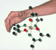

|
|
|
C. Stereochemical Properties of Metal Tris Chelates
3. Determining the Absolute Configuration (Λ or Δ) for a Metal Tris Chelate
a. Method 1: i) for Delta (Δ)
We will illustrate two ways that we find most useful in determining the absolute configuration for a metal tris chelate. To illustrate we will use the &Lambda and &Delta Isomers of the Tris(acetonylacetonate)metal complexes. (Click here for more information on M(acac)3 Complexes)
To your left is one of the isomers of Tris(acetonylacetonate)chromium(III). Reference
First: allign your molecule so that you are looking directly down the C3 axis:
Potentially useful commands:
Make sure one coordinating atom from each ligand is in the front and the second coordinating atom (from the same
ligand) is in the back:
Therefore we give the molecule a facial orientation. All the green atoms are on the back face, all the red atoms are on the front face
Run the following test first with your right hand and then with your left:
Place your finger tips on a back ligand atom and curl your fingers along the backbone of that same ligand toward the front coordinating atom (ie go from the green atom to the red atom along the bonds that connnect the ligating atoms).
If you can do this with your right hand and your thumb is pointing towards you; you have the Δ Isomer
So here is the test with Marion's right hand:

It works! Marion's thumb is pointing towards you, thus this is the Δ Isomer
|